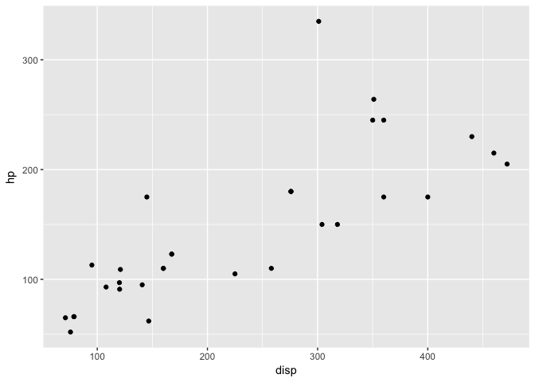
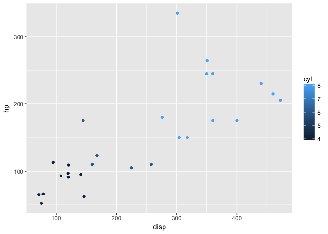
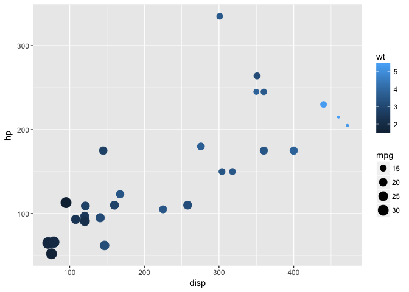
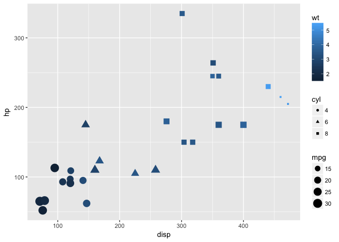

The ggplot2 package is a relatively novel approach to generating highly informative publication-quality graphics. The “gg” stands for “Grammar of Graphics”. In short, instead of thinking about a single function that produces a plot, ggplot2 uses a “grammar” approach, akin to building more and more complex sentences to layer on more information or nuance.
The ggplot2 package assumes that data are in the form of a data.frame. In some cases, the data will need to be manipulated into a form that matches assumptions that ggplot2 uses. In particular, if one has a matrix of numbers associated with different subjects (samples, people, etc.), the data will usually need to be transformed into a “long” data frame.
To use the ggplot2 package, it must be installed and loaded. Assuming that installation has been done already, we can load the package directly:
library(ggplot2)We are going to use the mtcars dataset, included with R, to experiment with ggplot2.
data(mtcars)mtcars dataset using View, summary, dim, class, etc.We can also take a quick look at the relationships between the variables using the pairs plotting function.
pairs(mtcars)That is a useful view of the data. We want to use ggplot2 to make an informative plot, so let’s approach this in a piecewise fashion. We first need to decide what type of plot to produce and what our basic variables will be. In this case, we have a number of choices.
ggplot(mtcars,aes(x=disp,y=hp))First, a little explanation is necessary. The ggplot function takes as its first argument a data.frame. The second argument is the “aesthetic”, aes. The x and y take column names from the mtcars data.frame and will form the basis of our scatter plot.
But why did we get that “Error: No layers in plot”? Remember that ggplot2 is a “grammar of graphics”. We supplied a subject, but no verb (called a layer by ggplot2). So, to generate a plot, we need to supply a verb. There are many possibilities. Each “verb” or layer typically starts with “geom” and then a descriptor. An example is necessary.
ggplot(mtcars,aes(x=disp,y=hp)) + geom_point()
We finally produced a plot. The power of ggplot2, though, is the ability to make very rich plots by adding “grammar” to the “plot sentence”. We have a number of other variables in our mtcars data.frame. How can we add another value to a two-dimensional plot?
ggplot(mtcars,aes(x=disp,y=hp,color=cyl)) + geom_point()
The color of the points is a based on the numeric variable wt, the weight of the car. Can we do more? We can change the size of the points, also.
ggplot(mtcars,aes(x=disp,y=hp,color=wt,size=mpg)) + geom_point()
So, on our 2D plot, we are now plotting four variables. Can we do more? We can manipulate the shape of the points in addition to the color and the size.
ggplot(mtcars,aes(x=disp,y=hp)) + geom_point(aes(size=mpg,color=wt,shape=cyl))Why did we get that error? Ggplot2 is trying to be helpful by telling us that a “continuous varialbe cannot be mapped to ‘shape’”. Well, in our mtcars data.frame, we can look at cyl in detail.
class(mtcars$cyl)## [1] "numeric"summary(mtcars$cyl)## Min. 1st Qu. Median Mean 3rd Qu. Max.
## 4.000 4.000 6.000 6.188 8.000 8.000table(mtcars$cyl)##
## 4 6 8
## 11 7 14The cyl variable is “kinda” continuous in that it is numeric, but it could also be thought of as a “category” of engines. R has a specific data type for “category” data, called a factor. We can easily convert the cyl column to a factor like so:
mtcars$cyl = as.factor(mtcars$cyl)Now, we can go ahead with our previous approach to make a 2-dimensional plot that displays the relationships between five variables.
ggplot(mtcars,aes(x=disp,y=hp)) + geom_point(aes(size=mpg,color=wt,shape=cyl))
I leave this section open-ended for you to explore further options with the ggplot2 package. The data represent the on-time data for all flights that departed New York City in 2013.
library(nycflights13)
head(flights)## # A tibble: 6 × 19
## year month day dep_time sched_dep_time dep_delay arr_time
## <int> <int> <int> <int> <int> <dbl> <int>
## 1 2013 1 1 517 515 2 830
## 2 2013 1 1 533 529 4 850
## 3 2013 1 1 542 540 2 923
## 4 2013 1 1 544 545 -1 1004
## 5 2013 1 1 554 600 -6 812
## 6 2013 1 1 554 558 -4 740
## # ... with 12 more variables: sched_arr_time <int>, arr_delay <dbl>,
## # carrier <chr>, flight <int>, tailnum <chr>, origin <chr>, dest <chr>,
## # air_time <dbl>, distance <dbl>, hour <dbl>, minute <dbl>,
## # time_hour <dttm>Feel free to explore. Consider using other “geoms” during your exploration.
sessionInfo()## R Under development (unstable) (2016-10-26 r71594)
## Platform: x86_64-apple-darwin13.4.0 (64-bit)
## Running under: macOS Sierra 10.12.1
##
## locale:
## [1] en_US.UTF-8/en_US.UTF-8/en_US.UTF-8/C/en_US.UTF-8/en_US.UTF-8
##
## attached base packages:
## [1] stats graphics grDevices utils datasets base
##
## other attached packages:
## [1] nycflights13_0.2.0 ggplot2_2.2.0 BiocStyle_2.3.15
## [4] knitr_1.15.1
##
## loaded via a namespace (and not attached):
## [1] Rcpp_0.12.8.2 codetools_0.2-15 assertthat_0.1
## [4] digest_0.6.10 rprojroot_1.1 plyr_1.8.4
## [7] grid_3.4.0 gtable_0.2.0 backports_1.0.4
## [10] magrittr_1.5 evaluate_0.10 scales_0.4.1
## [13] stringi_1.1.2 lazyeval_0.2.0 rmarkdown_1.2.9000
## [16] labeling_0.3 tools_3.4.0 stringr_1.1.0
## [19] munsell_0.4.3 yaml_2.1.14 colorspace_1.3-1
## [22] htmltools_0.3.5 tibble_1.2 methods_3.4.0